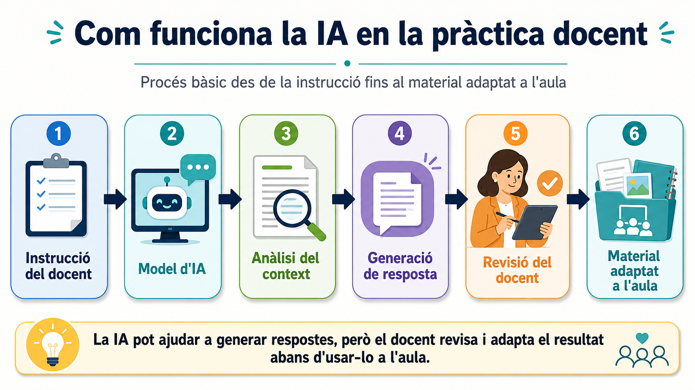
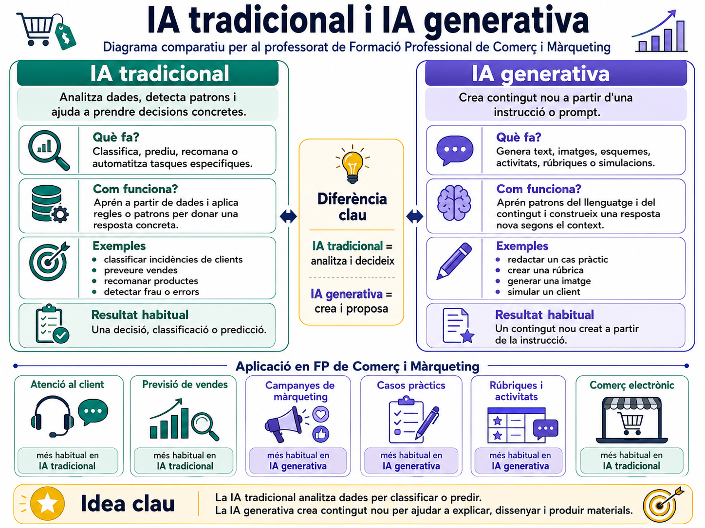

Com funciona la intel·ligència artificial i com pot ajudar-nos a l'aula
Aquest tutorial està pensat per a professorat de Formació Professional de la família professional de Comerç i Màrqueting. L'objectiu és entendre, sense necessitat de coneixements tècnics avançats, què fa realment la intel·ligència artificial generativa, quines possibilitats ofereix en la tasca docent i quines precaucions convé tindre presents.
Idea clau
La IA no "pensa" com una persona. Treballa amb patrons apresos a partir de grans quantitats de dades i genera respostes probables segons les instruccions que rep.
1. Què entenem per intel·ligència artificial?
La intel·ligència artificial és un conjunt de tecnologies que permeten a un sistema informàtic realitzar tasques que, tradicionalment, associem a la intel·ligència humana: classificar informació, reconéixer patrons, fer prediccions, resumir textos, generar imatges, contestar preguntes o proposar solucions.
En educació, quan parlem d'IA hui en dia, normalment ens referim a ferramentes de IA generativa, com assistents conversacionals capaços de crear text, taules, rúbriques, qüestionaris, esquemes, activitats, casos pràctics o explicacions adaptades.
Diferència entre IA tradicional i IA generativa
| Tipus d'IA | Què fa? | Exemple en Comerç i Màrqueting |
|---|---|---|
| IA tradicional | Classifica, detecta patrons o automatitza decisions concretes. | Classificar incidències de clients segons la seua urgència. |
| IA generativa | Crea contingut nou a partir d'una instrucció. | Redactar un guió per a una simulació de venda. |
| IA predictiva | Estima resultats futurs a partir de dades. | Preveure la demanda d'un producte segons vendes anteriors. |
2. Com funciona una IA generativa?
Una IA generativa de text funciona, simplificant molt, com un sistema que ha aprés relacions entre paraules, idees i estructures. Quan li fem una pregunta o li donem una instrucció, calcula quina resposta és més probable i coherent segons el context.
No consulta necessàriament Internet, no comprova sempre els fets i no té criteri professional propi. Per això és fonamental que el professorat supervise, adapte i valide el resultat.

Atenció
La IA pot inventar dades, normatives, cites o exemples. Aquest fenomen s'anomena sovint al·lucinació. En continguts legals, fiscals, comptables o laborals cal verificar sempre la informació amb fonts oficials o materials actualitzats.

3. Què és un prompt?
Un prompt és la instrucció que escrivim a la IA. La qualitat del resultat depén molt de com formulem aquesta instrucció.
Un bon prompt sol incloure:
- Rol: qui ha d'actuar la IA.
- Context: nivell, mòdul, cicle i situació d'aula.
- Tasca: què volem que faça.
- Format: taula, esquema, rúbrica, activitat, qüestionari, etc.
- Criteris: durada, dificultat, competències, llengua, to o limitacions.
Exemple de prompt bàsic
| Text Only | |
|---|---|
Exemple de prompt millorat
| Text Only | |
|---|---|
Truc docent
Si la primera resposta no és bona, no cal començar de zero. Pots demanar: "fes-ho més breu", "adapta-ho a alumnat amb dificultats", "afegeix un exemple realista" o "converteix-ho en una activitat cooperativa".
4. Com pot ajudar al professorat de Comerç i Màrqueting?
La IA pot ser útil en moltes tasques de preparació, seguiment i adaptació de materials. No substitueix el criteri docent, però pot reduir temps en tasques repetitives i ajudar a generar alternatives.
4.1 Preparació de classes
La IA pot ajudar a:
- Crear esquemes d'una unitat didàctica.
- Redactar explicacions amb diferents nivells de dificultat.
- Proposar exemples contextualitzats en botigues, superfícies comercials, magatzems o canals digitals.
- Generar casos pràctics sobre venda, aparadorisme, atenció al client, logística, promocions o comerç electrònic.
- Preparar activitats d'inici, desenvolupament i consolidació.
Prompt per a preparar una sessió
| Text Only | |
|---|---|
4.2 Creació de casos pràctics
En la família de Comerç i Màrqueting, els casos pràctics són especialment valuosos perquè connecten els continguts amb situacions professionals molt pròximes a l'entorn laboral: venda presencial, comerç digital, magatzem, promoció, transport, aparadorisme i relació amb clients.
| Mòdul o àrea | Exemple de cas que pot generar la IA |
|---|---|
| Tècniques de venda | Simulació d'una venda consultiva segons el perfil del client. |
| Dinamització del punt de venda | Proposta de lineal, cartelleria i promoció per a una campanya. |
| Atenció al client | Resposta professional a una reclamació en botiga o en línia. |
| Gestió de compres | Comparació d'ofertes de proveïdors segons preu, termini i qualitat. |
| Logística i magatzem | Organització d'una recepció de mercaderies i preparació de comandes. |
| Comerç electrònic | Redacció d'una fitxa de producte i proposta d'accions de difusió. |
Prompt per a un cas pràctic
| Text Only | |
|---|---|
4.3 Adaptació a diferents ritmes d'aprenentatge
Una mateixa activitat es pot transformar en versions amb diferent nivell de suport:
- Versió guiada amb passos detallats.
- Versió estàndard per a treball autònom.
- Versió d'ampliació amb major complexitat.
- Versió amb vocabulari simplificat.
- Versió amb exemples resolts abans de l'activitat.
Prompt per a atenció a la diversitat
4.4 Avaluació i retroacció
La IA pot ajudar a crear instruments d'avaluació, sempre revisats pel docent:
- Rúbriques.
- Llistes de comprovació.
- Preguntes tipus test.
- Preguntes de resposta curta.
- Situacions professionals a resoldre.
- Models de feedback personalitzat.
Prompt per a una rúbrica
5. Usos concrets en la tasca docent
Abans de classe
| Necessitat docent | Com pot ajudar la IA |
|---|---|
| Planificar una unitat | Proposa una seqüència de sessions. |
| Crear materials | Genera apunts inicials, esquemes o exemples. |
| Preparar activitats | Dissenya casos, exercicis i simulacions. |
| Anticipar dificultats | Identifica errors habituals de l'alumnat. |
Durant la classe
| Necessitat docent | Com pot ajudar la IA |
|---|---|
| Explicar d'una altra manera | Reformula una explicació amb un exemple més proper. |
| Crear preguntes ràpides | Genera preguntes de comprovació. |
| Simular situacions | Fa de client, proveïdor, responsable de botiga o membre de l'equip comercial. |
| Donar suport a grups | Proposa pistes graduades sense donar la solució completa. |
Després de classe
| Necessitat docent | Com pot ajudar la IA |
|---|---|
| Revisar activitats | Ajuda a detectar possibles criteris de correcció. |
| Donar feedback | Redacta comentaris orientatius a partir d'una rúbrica. |
| Millorar materials | Simplifica, amplia o reordena continguts. |
| Preparar reforç | Genera activitats addicionals segons errors observats. |
6. Exemple complet: preparar una activitat de venda i atenció al client
Objectiu
Crear una activitat professionalitzadora sobre una situació de venda, assessorament i resolució d'una incidència amb un client.
Prompt
Resultat esperat
La IA pot retornar una proposta que el docent revisarà i adaptarà. El valor no està en copiar-la directament, sinó en usar-la com a primer esborrany per a:
- Ajustar les dades al nivell del grup.
- Afegir plantilles de fitxa de client, full d'incidència o registre de venda.
- Revisar que els arguments comercials siguen realistes i ètics.
- Connectar l'activitat amb els resultats d'aprenentatge del mòdul.
- Afegir una part de reflexió professional.
Bon ús
La IA és especialment útil quan li demanem esborranys, alternatives, exemples i adaptacions. El producte final ha de passar sempre pel filtre professional del docent.
7. Limitacions i riscos
7.1 Pot donar informació incorrecta
La IA genera respostes plausibles, però no sempre correctes. En Comerç i Màrqueting açò és especialment important en:
- Normativa de consum.
- Protecció de dades en accions comercials.
- Publicitat, promocions i preus.
- Condicions de venda i devolucions.
- Comerç electrònic.
- Drets de les persones consumidores.
- Ús d'imatges, marques i continguts en campanyes.
Continguts sensibles
No utilitzes una resposta d'IA com a font única per a explicar normativa actual. Contrasta-la amb fonts oficials, manuals actualitzats o criteris del departament.
7.2 Pot reproduir biaixos
Com que aprén de dades creades per persones, pot reproduir estereotips o exemples poc inclusius. Cal revisar:
- Llenguatge no discriminatori.
- Repartiment de rols professionals.
- Exemples d'empreses i famílies diverses.
- Accessibilitat del material.
7.3 Protecció de dades
No s'han d'introduir dades personals de l'alumnat ni informació confidencial del centre en ferramentes externes sense garanties adequades.
| No introduir | Alternativa segura |
|---|---|
| Nom i cognoms de l'alumne | "Alumne A" o "estudiant de primer curs" |
| Expedients o informes personals | Descripció anonimitzada de necessitats educatives |
| Notes individuals | Patrons generals d'errors del grup |
| Dades reals d'empreses | Empreses fictícies |
Regla pràctica
Si una dada permet identificar una persona, una empresa real o una situació confidencial, no la poses en el prompt.
8. Com ensenyar l'alumnat a usar IA de manera responsable
L'objectiu no és sols que el professorat use IA, sinó també preparar l'alumnat per a un entorn laboral on aquestes ferramentes seran habituals.
Podem treballar amb l'alumnat:
- Com redactar instruccions clares.
- Com verificar una resposta.
- Com detectar errors.
- Com citar o declarar l'ús d'IA si el centre ho estableix.
- Com millorar un document sense perdre autoria.
- Com usar la IA com a suport, no com a substitut de l'aprenentatge.
Activitat per a l'aula: auditar una resposta d'IA
- El docent proporciona una resposta generada per IA sobre una reclamació, una campanya promocional o una fitxa de producte.
- L'alumnat identifica possibles errors, omissions o dades poc clares.
- Es contrasta amb els apunts o fonts del mòdul.
- Es redacta una versió corregida.
- Es reflexiona sobre quan és útil la IA i quan pot ser perillosa.
Pregunta per al debat
En una empresa, seria acceptable enviar a un client una resposta generada per IA sense revisar-la? Per què?
9. Banc de prompts per al professorat
Generar explicacions
| Text Only | |
|---|---|
Crear activitats
| Text Only | |
|---|---|
Crear una rúbrica
| Text Only | |
|---|---|
Adaptar material
| Text Only | |
|---|---|
Crear preguntes de repàs
| Text Only | |
|---|---|
Simular un rol professional
| Text Only | |
|---|---|
10. Recomanacions finals
- Comença amb tasques concretes i de baix risc: esquemes, idees d'activitats o preguntes de repàs.
- Revisa sempre el contingut abans de portar-lo a l'aula.
- Demana a la IA formats concrets: taules, llistes, rúbriques o plantilles.
- Contextualitza els prompts amb el cicle, mòdul, nivell i durada.
- Evita introduir dades personals o confidencials.
- Utilitza la IA per ampliar possibilitats, no per perdre control sobre el procés docent.
Resum
La intel·ligència artificial pot ajudar el professorat de Comerç i Màrqueting a preparar materials, crear casos pràctics, adaptar activitats i millorar la retroacció. El seu ús educatiu és més potent quan combina automatització, criteri docent i revisió crítica.
11. Mini-repte per a practicar
Tria una unitat que hages d'impartir pròximament i prova aquest procés:
- Demana a la IA un esquema de la sessió.
- Demana una activitat pràctica contextualitzada.
- Demana una versió més senzilla per a reforç.
- Demana una rúbrica breu.
- Revisa-ho tot i adapta-ho al teu grup.
Al final, compara el temps invertit amb el resultat obtingut i anota que t'ha sigut útil, que has hagut de corregir i que no tornaries a demanar de la mateixa manera.